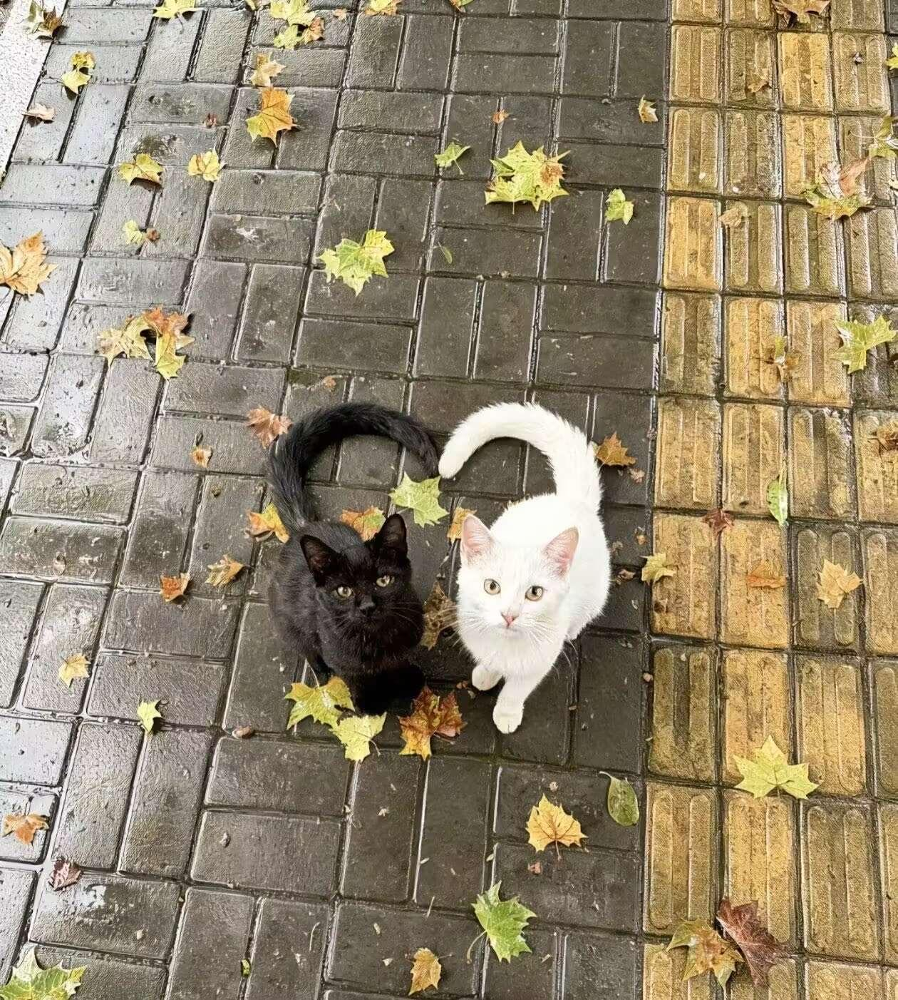

歡迎來到我的網站
我是振宏，這是我的第一個網站！
關於我

我目前正在學習網站開發，希望未來可以建立自己的作品集網站， 並持續學習 HTML、CSS、JavaScript。
聯絡我
深色模式
我的夢想
1.環遊世界一圈
2.到南極旅行
3.太上空
4.淺水看海底世界
5.到北極看極光
6.成為投資家
7.成為創業者
8.建立一家上市公司
9.年收入破千萬
10.建立被動收入系統
11.實現財務自由
12.建立自己的品牌
13.成為某領域的專家
14.創造改變世界的產品
15.培養自己的學生
16.留下能影響世代的作品
17.擁有海景別墅
18.環島
19.建立理想的工作室
20.在海外擁有第二的家
21.帶父母出國過年
22.每天都能自由安排時間
23.帶父母環遊世界
24.幫助兄姊完成夢想
25.結交世界各地朋友
26.學會三種語言
27.精通一項樂器
28.每年閱讀50本書
29.成為自已理想說的樣子
30.觀賞世界七大奇景
31.讓金錢成為選擇自由的工具
32.成為業界領袖
33.帶領千人以上團隊
34.發明一項重大技術
35.拍攝自己的紀錄片
36.獲得國際獎項
37.成為時代代表人物
38.留下一個世代傳承的事業
39.可以隨時選擇工作或休息
40.活成自己羨慕的人
41.建立幸福的家庭
42.擁有孩子並陪伴成長
43.成為值得信任的人
44.學會寫作
45.學會投資與管理財富
46.學會公開演講
47.成為終身學習者
48.擁有強健體魄
49.保持青春活力到晚年
50.幫助弱勢群體